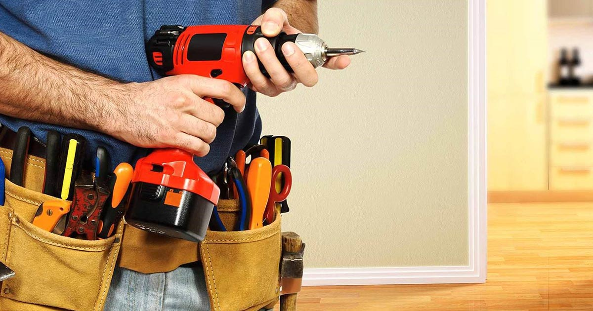

Carpentry

The little things add up. That's why regular maintenance in
and around the home is especially important. With an average
of 10 years' experience, all of our home improvement professionals
know exactly what to look for and how to fix it. From replacing
grout in the bathroom to installing a fan in the attic, let us
tackle the small and large projects on your list.
Santos performs power washing—also known as pressure washing—that
removes built-up dirt and debris from decks and patios. You won’t have
to pick up, clean or return a rental power washer. Best of all, the job
will be handled by a professional who knows how to care for your deck and
patio while making it shine
Did you know 15,000+ dryer fires occur every year in the United States?
That is just one of the many reasons that regularly scheduled dryer vent
cleaning is beneficial to your home. It’s not enough to clean the lint trap
in your dryer—you need to have a professional come to your house and replace
the ducts between the dryer and the main vent often located behind it.